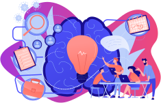
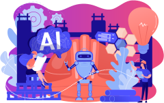
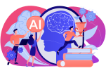

AIBotics 2022 Webinar Series

17 February 2022 | Webinar Code: 0217-FoSCR
Future of Skills: Competency Re-Imagined
Understand shifts in learning models for the next generation
To understand how AI and Robotics can augment and accelerate the human learning process
To suggest considerations for "Life-Wise Learning"
17 March 2022 | Webinar Code: 0317-AIRC
AI & Robotics in Construction
To learn about existing used cases for AI & Robotics in Construction
To explore other potential industry needs to adopt emerging technologies
To discuss and recommend approaches to help companies transition in the emerging digital age

21 April 2022 | Webinar Code: 0421-METAW
The World of Metaverse & Its Commercial Applications
To learn about the technologies and motivation behind Metaverse
To explore potential industry opportunities to leverage such technology
To discuss and recommend approaches to help companies transition into the emerging digital age using Metaverse applications
19 May 2022 | Webinar Code: 0519-ICRAI
Innovations & Challenges in Responsible AI
To share some of the innovations in AI that are being implemented to aid in Sustainable Development Goals and ESG Projects
To discuss the relationship between Responsible AI and Innovation
To highlight some of the current work and the challenges faced by technologists and researchers when implementing and/or publishing ethical or responsible AI

16 June 2022 | Webinar Code: 0616-FoHL
Future of Healthy Living
To showcase new ideas of applying AI into Healthy Living
To understand how AI and Robotics can support healthy living habits
To suggest considerations for “Digitalized Healthcare”